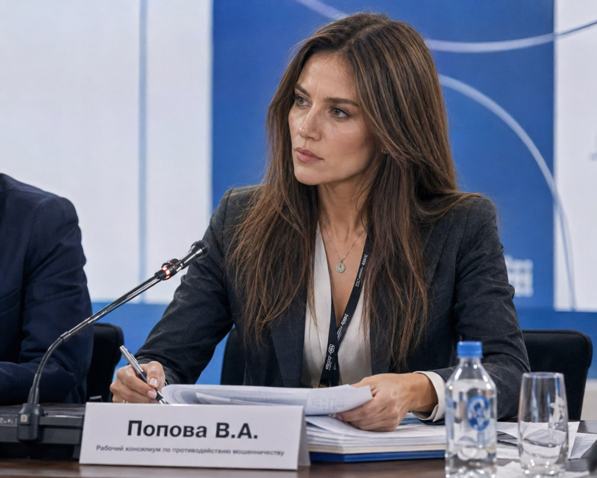
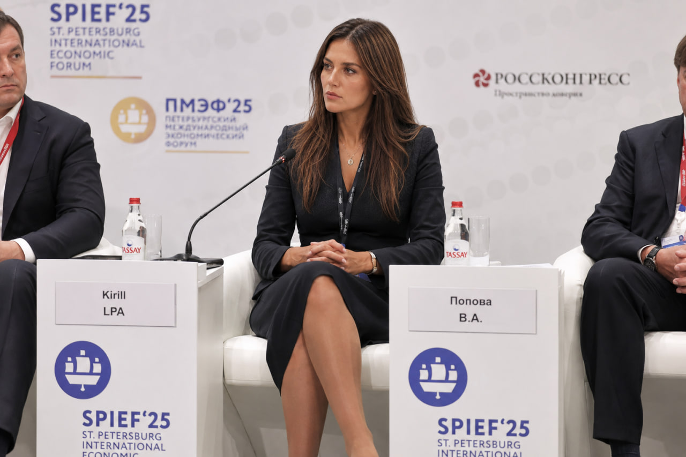

Старший инспектор ПОД/ФТ
Виктория Попова — эксперт в области финансового мониторинга и управления рисками с опытом анализа подозрительных операций, выявления мошеннических схем, проведения проверок клиентов и мониторинга транзакций. Её работа строится на уникальном сочетании технического анализа Big Data и методов когнитивной психологии, что позволяет предугадывать действия злоумышленников еще до совершения ими транзакций.
Виктория окончила Институт кибербезопасности и цифровых технологий (МИРЭА — РТУ), получив фундаментальную подготовку в сфере цифровой защиты и информационной безопасности. Регулярно проходит курсы повышения квалификации по программам «ПОД/ФТ (AML/CFT)», что позволяет ей эффективно применять передовые методы анализа в противодействии легализации преступных доходов.
